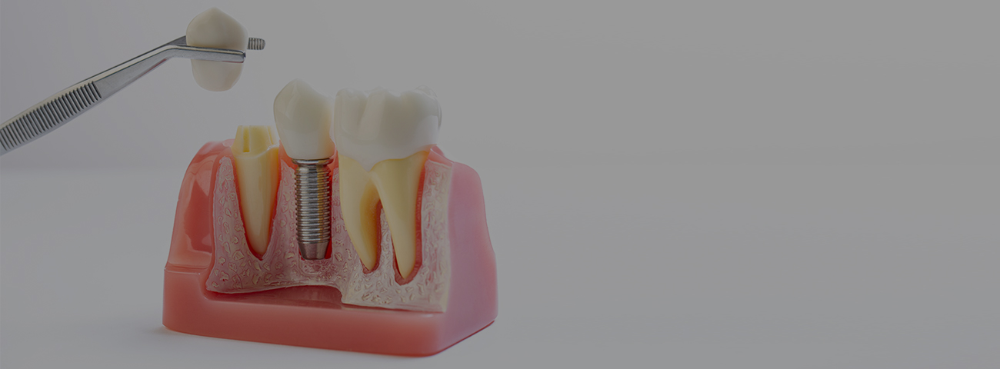
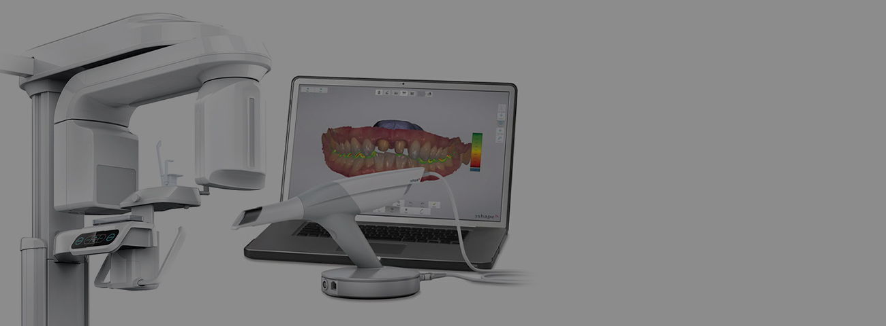
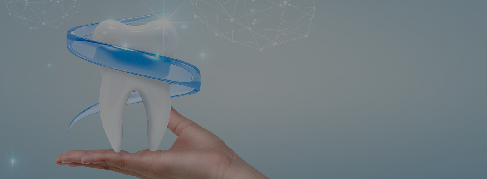
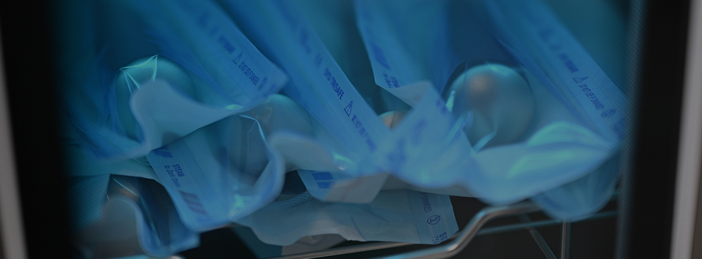
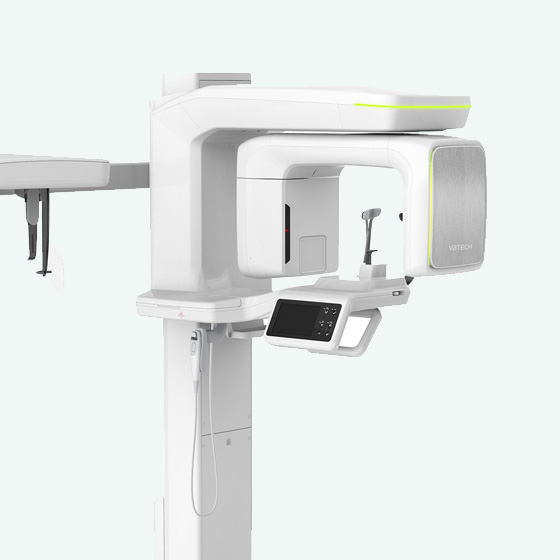
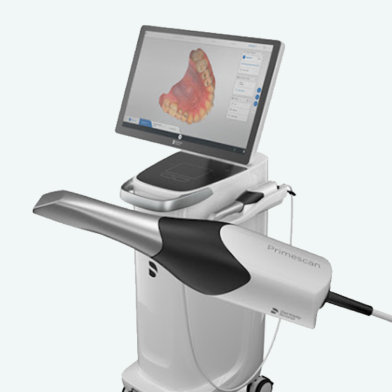
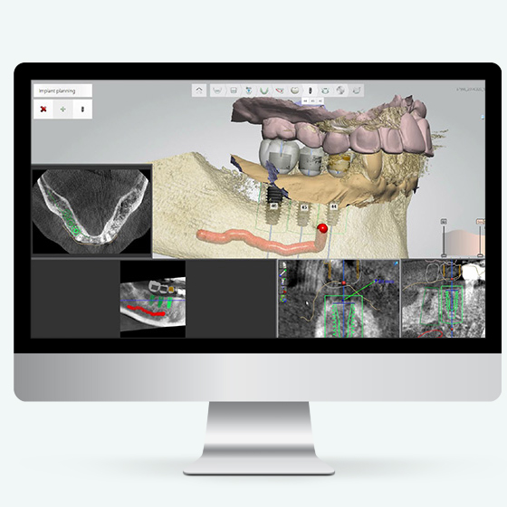

한번에 정확한 수술로 평생쓰는 임플란트
닥터스의 특별함
20년 이상의 풍부한 임상증례로
실력을 인정받은 의료진이
정확한 진단과 안전한 치료를
약속드립니다

3D CT, 3D 구강스캐너등의
첨단 디지털 의료장비를 이용해
오차없이 오직 한분 한분을 위한
가장 적합한 치료방법을 제공합니다.

임플란트가 아무리 좋다 하지만
자연치아보다 더 좋을 수 없습니다
닥터스치과는 하루라도 더
자연치아를 쓸 수 있도록 노력합니다

구강내 사용되는 모든 기구는
1인 사용후 멸균처리하고 있으며
주기적인 소독과 위생 시스템 도입으로
안전하고 청결한 환경을 제공합니다



